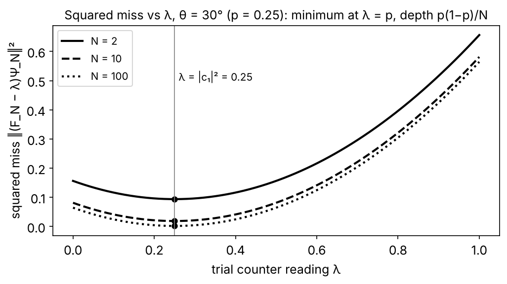
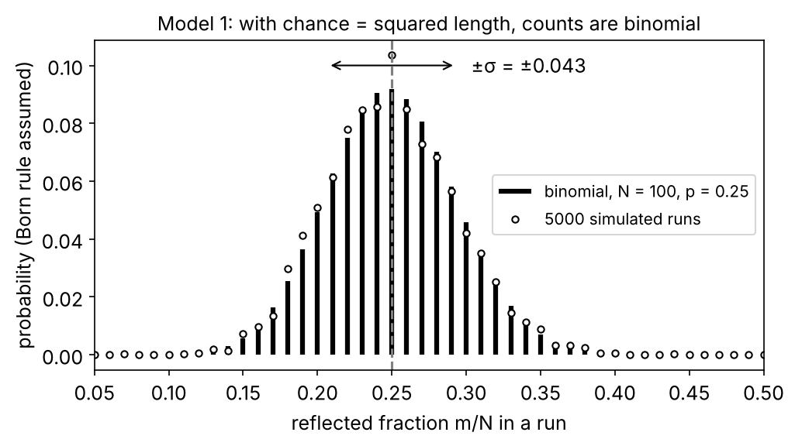
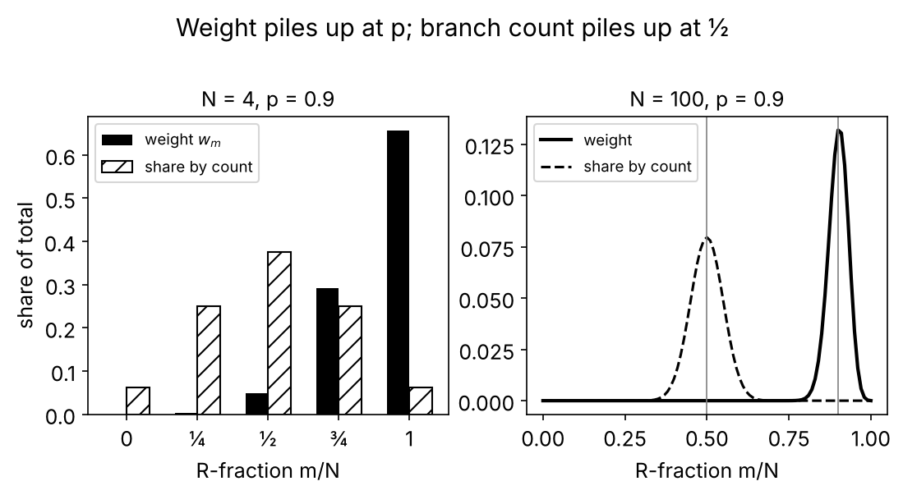

Send photons one at a time through a polarizer set 30° from the axis of a polarizing splitter and count the reflected ones: in the ideal set-up, after 100 photons the reflected share scatters by about 4 percentage points around 25%, after 10 000 by about 0.4, and it settles on the squared amplitude; the frequency-operator argument is the attempt to get that number, exponent and all, out of the $N$-photon state itself, with no probability rule put in by hand. The one-line version, which you can check with a calculator below: write the state of $N$ identically prepared photons as a list with one entry per string of outcomes; build the "counter" that reads the fraction of reflected photons on each string; ask which single reading $\lambda$ makes the list closest to a sure bet. The answer is $\lambda = |c_1|^2$ for every $N$, with a miss whose squared size is $|c_1|^2(1-|c_1|^2)/N$; in the infinite-copy construction the miss is zero and the list is a sure bet (in the sense that construction defines), so the rule "a sure bet happens for certain" delivers the long-run frequency $|c_1|^2$. Where the 2 comes from, and what the argument quietly assumes, is the second half.

Experiment 1: counting at a polarizer. A polarizer is a sheet that passes the part of the light's electric field lying along its axis and absorbs the part at right angles to it; a polarizing beam splitter is a cube that sends light polarized along its axis out of one face (transmitted, call it T) and light polarized at right angles out of another (reflected, R). A heralded single-photon source is a crystal that emits photons in pairs; detecting one photon announces that its partner is on the way, and a count is kept only when a partner was announced, so that with rare exceptions (two pairs in one time window) at most one photon is in the apparatus. The set-up used as the worked example below: heralded photons pass a polarizer whose axis is at angle $\theta$ to the splitter's transmitting axis, then the splitter, with a detector at each exit; $\theta = 30°$, chosen so that the two exits are unequal. Three observations, each from its own experiment, because no single published run did all three at 30°. (a) Whole arrivals. Grangier, Roger and Aspect (1986) sent heralded photons from a two-step emission in calcium atoms at a 50/50 beam splitter and compared the rate at which both detectors fired together with the rate that independent clicks at the same single rates would give: the ratio was $0.18 \pm 0.06$, where a classical wave, which divides its energy at every splitter, gives at least 1. Thorn et al. (2004) repeated the test with crystal-pair heralded photons at a polarizing beam splitter and found about $0.02$. (b) Malus's law. Over many photons the transmitted fraction is $\cos^2\theta$ and the reflected fraction $\sin^2\theta$: Malus (1809) for classical light; the same curve with heralded single photons in teaching laboratories (Beck's single-photon labs) and with photon pairs (Dehlinger & Mitchell, 2002), to within the few-per-cent imperfections of real polarizers and detectors. For $\theta = 30°$ that is $0.75$ and $0.25$. (c) Scatter. The fraction found in a run of $N$ photons differs from run to run by an amount that shrinks as $1/\sqrt N$: this is the counting statistics that every photon-counting experiment uses for its error bars and that repeated runs bear out, and the same $\sqrt{Np(1-p)}$ scatter of a count was measured directly with trapped ions prepared in a superposition of two levels (Itano et al., 1993, who named it quantum projection noise). Idealizations in all the numbers below: lossless optics, perfect detectors, one photon at a time, a polarizer that leaks nothing.
| photons in the run, $N$ | 1 | 4 | 100 | 10 000 | 1 000 000 |
|---|---|---|---|---|---|
| typical run-to-run scatter of the reflected fraction, $\sqrt{0.25 \times 0.75/N}$ | 0.433 | 0.217 | 0.043 | 0.0043 | 0.00043 |
![Left: Malus's law for ideal lossless optics, the transmitted fraction cos²θ (solid) and the reflected fraction sin²θ (dashed) against the polarizer angle θ; at θ = 30° they are 0.75 and 0.25 (dots). Right: five simulated runs (independent photons, chance 0.25 of reflection each; not laboratory data) of the reflected fraction so far against the number of photons counted, on a logarithmic axis, with the band 0.25 ± √(p(1−p)/N) drawn thick. Single runs wander in and out of the band, and the band narrows as 1/√N. The vertical axis is cut at about 0.7, so a run's first few points can lie above the window (a run whose first photon is reflected starts at fraction 1).](figures/a-experiment-1.png)
Experiment 2: a random-number generator. Send faint light from a light-emitting diode or a laser, attenuated until two photons in one time window are rare, at a 50/50 split, either an ordinary 50/50 beam splitter (Stefanov et al., 2000) or, polarized at 45°, a polarizing beam splitter (Jennewein et al., 2000), one detector per exit, and write down 1 for one exit and 0 for the other: one bit per click (both generators used attenuated light, not heralded photons). The fraction of 1s converges to $\tfrac12$ up to a small bias from unequal detector efficiencies and an imperfect splitting ratio, which is measured and removed. Keep this one in mind as a check, not as evidence for the square: when the two amplitudes are equal in size, every exponent gives $\tfrac12$ (shown in model 2), so only an unequal split such as 25/75 can tell the square from any other power.
![Looking ahead to model 2: if the size of a part of the N-photon list were measured with an exponent q instead of 2, the reflected fraction carried by the heaviest strings in a long run would be f_q = |c₁|^q/(|c₀|^q + |c₁|^q), plotted here against the squared amplitude |c₁|² for q = 1, 2, 3, 4. All four curves pass through (0, 0), (½, ½) and (1, 1): a 50/50 splitter cannot tell the exponents apart. At a 25/75 split (vertical line) they give 0.37, 0.25, 0.16 and 0.10. Only q = 2 is the straight diagonal f = |c₁|².](figures/a-experiment-2.png)
Sources: Hecht, Optics, 5th ed., ch. 8 "Polarization", the sections on polarizers (Malus's law) and polarizing beam splitters; Beck, Quantum Mechanics: Theory and Experiment (2012), the photon-polarization chapters and the single-photon laboratories; Dehlinger & Mitchell, Am. J. Phys. 70, 903 (2002): $\cos^2$ curves with photon pairs; Grangier, Roger & Aspect, Europhys. Lett. 1, 173 (1986); Thorn et al., Am. J. Phys. 72, 1210 (2004); Itano et al., Phys. Rev. A 47, 3554 (1993); Jennewein et al., Rev. Sci. Instrum. 71, 1675 (2000); Stefanov et al., J. Mod. Opt. 47, 595 (2000).
What the classical candidates say, and which observation kills each.
| Picture | What it predicts | Verdict |
|---|---|---|
| Classical light wave | The energy divides at the splitter, a fraction $\cos^2\theta$ one way: right mean. But every pulse is divided, so with faint light the two detectors would fire together at least as often as chance | killed by the whole arrivals (double-firing ratios 0.18 and 0.02, not $\ge 1$) |
| Tickets: each photon carries a pre-set exit | Matches any single-photon frequency, by construction; says nothing about why $\cos^2\theta$ | not ruled out by counts alone; Bell tests constrain it for pairs; explains nothing here |
| Ordinary probability with $p$ supplied from outside | A biased coin with $p = 0.25$: right mean, right $1/\sqrt N$ scatter | consistent with every count; silent on where $p$ comes from, which is your question |
The classical wave already contains a square (energy goes as the square of the field) and gets the mean right; what it cannot do is deliver whole photons. The coin is the template the quantum argument wants to reproduce without being handed $p$.
![The double-firing test at a 50/50 beam splitter: α is the rate at which both detectors fire together divided by the rate that independent clicks at the same single rates would give. For a classical wave of intensity I, α = ⟨I²⟩/⟨I⟩² (the brackets are time averages), which is never below 1: exactly 1 for a steady wave and 2 for light whose intensity fluctuates as thermal light does (both computed). An ideal single photon gives 0. Grangier, Roger and Aspect (1986) measured 0.18 ± 0.06 (quoted from their paper, not computed), below the classical floor.](figures/a-classical-candidates.png)
Sources: Feynman, Leighton & Sands, The Feynman Lectures on Physics, Vol. III, ch. 1 "Quantum Behavior", §1-2 to §1-4 (the experiments with bullets, waves and electrons); Grangier, Roger & Aspect (1986) and Thorn et al. (2004), above.
Model 1: the Born rule as a postulate. Intuition. The photon after the polarizer has a two-component state $(c_0, c_1) = (\cos\theta, \sin\theta)$, $c_0$ the amplitude for T and $c_1$ for R; for $\theta = 30°$ that is $(\sqrt3/2, \tfrac12)$. The rule: the chance of an exit is the squared length of its component, $|c_0|^2 = 0.75$ and $|c_1|^2 = 0.25$, adding to 1. Call $p = |c_1|^2$. Once $p$ is a chance, the counts are ordinary statistics: for independently prepared photons the number $m$ of reflected ones in $N$ has the binomial distribution, mean $Np$ and standard deviation $\sqrt{Np(1-p)}$, so the fraction $m/N$ scatters by $\sqrt{p(1-p)/N}$, the table above. Why this model. One rule fits every count at every angle. Pros. Minimal; no infinite limits; the law of large numbers does the rest. Cons. The square is put in by hand (Born, 1926, whose main text said the amplitude determines the probability and whose footnote added in proof said it is proportional to the square); it says nothing about why 2 and not 1 or 4. The frequency-operator argument is the attempt to remove exactly this postulate.

Sources: Griffiths & Schroeter, Introduction to Quantum Mechanics, 3rd ed., §1.2 "The Statistical Interpretation" and §1.3 "Probability" (mean, standard deviation); Feynman, Leighton & Sands, Vol. I, ch. 6 "Probability", §6-2 "Fluctuations" and §6-3 "The random walk"; Sakurai & Napolitano, Modern Quantum Mechanics, 3rd ed., §1.4 "Measurements, Observables, and the Uncertainty Relations" (the measurement postulates); Born, Z. Phys. 37, 863 (1926).
Model 2: the frequency operator (Finkelstein 1963; Hartle 1968; Farhi, Goldstone & Gutmann 1989). Intuition. Keep from the formalism the states, the product rule for independent copies, the 2-norm, and just one rule about outcomes, the certainty rule: if a list is a sure bet for some reading, that reading is what you get. Then look at $N$ photons together, not one, and ask what their joint list says about the fraction reflected. Three definitions, each one line. A string $s$ is a sequence of $N$ letters T or R, one per photon; there are $2^N$ of them. The $N$-photon list $\Psi_N$ has one entry per string; for photons prepared independently the rule is that entries multiply (the product rule, an assumption named here: no entanglement between copies), so the entry of a string with $m$ R's is $c_0^{\,N-m}c_1^{\,m}$. The length of a list is the square root of the sum of the squared sizes of its entries (the 2-norm; it is the same square as in model 1, and that is the point to watch). The lists for $N = 1, 2, 3$, with $\theta = 30°$ so $c_0 = 0.866$, $c_1 = 0.5$:
| $N$ | strings | entries $c_0^{N-m}c_1^m$ | numbers | squared sizes | counter reading $m/N$ |
|---|---|---|---|---|---|
| 1 | T, R | $c_0,\ c_1$ | 0.866, 0.5 | 0.75, 0.25 | 0, 1 |
| 2 | TT, TR, RT, RR | $c_0^2,\ c_0c_1,\ c_1c_0,\ c_1^2$ | 0.75, 0.433, 0.433, 0.25 | 0.5625, 0.1875, 0.1875, 0.0625 | 0, ½, ½, 1 |
| 3 | TTT; TTR, TRT, RTT; TRR, RTR, RRT; RRR | $c_0^3;\ c_0^2c_1\ (\times3);\ c_0c_1^2\ (\times3);\ c_1^3$ | 0.650; 0.375; 0.217; 0.125 | 0.422; 0.141 each; 0.047 each; 0.0156 | 0; ⅓; ⅔; 1 |
In each row the squared sizes total 1: for $N=2$, $0.5625 + 0.1875 + 0.1875 + 0.0625 = 1$. In general the strings with $m$ R's number $C(N,m) = N!/(m!(N-m)!)$ (the binomial coefficient), and their squared sizes total $w_m = C(N,m)\,p^m(1-p)^{N-m}$, which sum over $m$ to $(p + 1 - p)^N = 1$ by the binomial theorem; this uses $|c_0|^2 + |c_1|^2 = 1$ and nothing else. Notice $w_m$ is the binomial distribution of model 1, but here it is a squared length, not yet a chance.
The counter. The frequency operator $F_N$ is the rule "multiply the entry of string $s$ by $m(s)/N$": a diagonal matrix in the string basis ($4\times4$ for $N=2$, with diagonal $0, \tfrac12, \tfrac12, 1$). Its possible readings (eigenvalues) are the multiples of $1/N$, from 0 to 1; its sure-bet lists (eigenvectors) are the lists whose nonzero entries all sit on strings with one and the same $m$. Two things to see at once. First, $p$ need not be a reading at all: for $p = 0.1$ and $N = 4$ the readings are $0, \tfrac14, \tfrac12, \tfrac34, 1$ and $0.1$ is not among them. Second, for $0 < p < 1$, $\Psi_N$ is not a sure-bet list at any finite $N$, because it has nonzero entries at every $m$. So the question is not "which reading is $\Psi_N$ certain of?" but "which reading $\lambda$ comes closest?", measured by the length of the miss $(F_N - \lambda)\Psi_N$, the list whose entry on string $s$ is $(m(s)/N - \lambda)$ times the entry of $\Psi_N$. If that miss had length zero, $\Psi_N$ would be a sure bet for $\lambda$.
The shortest miss, every step. The squared length of the miss is $$\|(F_N - \lambda)\Psi_N\|^2 = \sum_{m=0}^{N} w_m\Big(\frac{m}{N} - \lambda\Big)^2 .$$ For $N = 2$, $p = \tfrac14$: $w_0 = \tfrac{9}{16}$, $w_1 = \tfrac{6}{16}$, $w_2 = \tfrac{1}{16}$, so the squared miss is $\tfrac{9}{16}\lambda^2 + \tfrac{6}{16}(\tfrac12 - \lambda)^2 + \tfrac{1}{16}(1-\lambda)^2$. At $\lambda = \tfrac14$: $\tfrac{9}{16}\cdot\tfrac{1}{16} + \tfrac{6}{16}\cdot\tfrac{1}{16} + \tfrac{1}{16}\cdot\tfrac{9}{16} = \tfrac{24}{256} = \tfrac{3}{32} = 0.09375$. Try $\lambda = \tfrac12$ instead: $\tfrac{9}{16}\cdot\tfrac14 + 0 + \tfrac{1}{16}\cdot\tfrac14 = \tfrac{10}{64} = 0.156$, longer. For general $N$ the sum is awkward, so use a trick. Write $P^{(k)}$ for the matrix "is photon $k$ reflected?": it multiplies the entry of a string by 1 if letter $k$ is R and by 0 if it is T, so $P^{(k)}P^{(k)} = P^{(k)}$, and $F_N = \tfrac1N\big(P^{(1)} + \dots + P^{(N)}\big)$, since adding up the "is it R?" indicators counts the R's. Define, for any diagonal matrix $A$, the squared-length-weighted average $\langle A\rangle = \sum_s |\Psi_s|^2 A_s$ (a sum of numbers; nothing probabilistic has been said yet). Because the entries multiply, the squared sizes multiply too, and the sum over the letters of the other photons factorizes. Take $N = 2$ and $k = 2$, the second photon: the strings with letter 2 equal to R are TR and RR, with squared sizes $|c_0c_1|^2 + |c_1c_1|^2 = |c_1|^2\big(|c_0|^2 + |c_1|^2\big) = p \cdot 1 = p$, so $\langle P^{(2)}\rangle = p$; the only string with both letters R is RR, so $\langle P^{(1)}P^{(2)}\rangle = |c_1|^4 = p^2$; and $P^{(2)}P^{(2)} = P^{(2)}$ gives $\langle P^{(2)}P^{(2)}\rangle = p$. For general $N$ the same sums give one factor $|c_0|^2 + |c_1|^2 = 1$ for each photon not being asked about: $\langle P^{(k)}\rangle = p$; $\langle P^{(j)}P^{(k)}\rangle = p^2$ for $j \ne k$ (both letters R); $\langle P^{(k)}P^{(k)}\rangle = p$. Hence $$\langle F_N\rangle = \frac1N\cdot Np = p,\qquad \langle F_N^2\rangle = \frac{1}{N^2}\Big[\underbrace{Np}_{j=k} + \underbrace{N(N-1)p^2}_{j\ne k}\Big] = p^2 + \frac{p(1-p)}{N},$$ and expanding the square in the miss (the $\lambda^2$ term uses $\sum_s|\Psi_s|^2 = 1$), $$\|(F_N - \lambda)\Psi_N\|^2 = \langle F_N^2\rangle - 2\lambda\langle F_N\rangle + \lambda^2 = (\lambda - p)^2 + \frac{p(1-p)}{N}.$$ Read it: the miss is shortest at exactly $\lambda = p = |c_1|^2$, for every $N$, and the shortest squared miss is $p(1-p)/N$. Check against $N = 2$, $p = \tfrac14$: $\tfrac{3}{16}\cdot\tfrac12 = \tfrac{3}{32}$ ✓, and at $\lambda = \tfrac12$: $\tfrac{1}{16} + \tfrac{3}{32} = \tfrac{5}{32} = 0.156$ ✓. The same algebra with $p = \tfrac12$ gives $\tfrac18$ at $N = 2$. The square root of the shortest miss, $\sqrt{p(1-p)/N}$, is the number in the scatter table of experiment 1: that is the finite-$N$ face of the argument, and reading it as the run-to-run scatter is the Born reading, since it treats squared length as chance; the algebra alone says only "this is how far $\Psi_N$ is from being a sure bet".
![The weights w_m = C(N,m) pᵐ (1−p)^(N−m) for p = 1/4, as bars against the counter reading m/N, for N = 4, 16, 64 and 256 (each panel has its own vertical scale); the dashed line marks 1/4 and the spread √(p(1−p)/N) = 0.217, 0.108, 0.054, 0.027 is written above each panel. The weights total 1 in every panel and pile up ever more tightly round 1/4; at N = 4 the reading 1/4 exists but carries weight only 0.42, and at every N some weight sits away from 1/4 (at N = 256 it is too small to see far from the peak, but it is not zero). These are squared lengths; nothing here is a probability until a rule links length to chance.](figures/a-weights-concentrate.png)
The deviant part. Split $\Psi_N$ into the entries on strings whose fraction is within $\varepsilon$ of $p$ (the typical part) and the rest (the deviant part). On every deviant string $(m/N - p)^2 > \varepsilon^2$, so $\varepsilon^2 \times (\text{squared length of the deviant part}) \le \sum_m w_m(m/N - p)^2 = p(1-p)/N$, that is, $$\|\Psi_N^{\text{deviant}}\|^2 \le \frac{p(1-p)}{N\varepsilon^2}.$$ For $p = \tfrac14$ and $\varepsilon = 0.05$ the bound is $75/N$: above 1, and so empty, for $N < 75$; $0.075$ at $N = 10^3$, $0.0075$ at $10^4$, $7.5\times10^{-5}$ at $10^6$. The exact deviant length is smaller still and falls exponentially in $N$: $2.3\times10^{-4}$ at $N = 10^3$ and $4.8\times10^{-30}$ at $10^4$. The typical part's squared length is correspondingly at least $1 - 75/N$. So as $N$ grows the list is, in length, almost entirely made of strings whose R-fraction is within $\varepsilon$ of $|c_1|^2$, for every $\varepsilon > 0$, though at no finite $N$ is the deviant part zero (the all-R string alone has squared size $p^N > 0$).
![Squared length of the deviant part of Ψ_N, the strings whose R-fraction is more than ε from 1/4, for p = 1/4, against N on log–log axes: the exact value for ε = 0.05 (thick) and ε = 0.1 (thin), the bounds 75/N and 18.75/N (dashed), and p(1−p)/N = 0.1875/N (dotted). The bounds fall as 1/N and exceed 1 for N below 75 (ε = 0.05) and 19 (ε = 0.1), where they say nothing. The exact deviant lengths zigzag at small N, because the reading m/N can only take multiples of 1/N, and then fall exponentially, far below their bounds; the axis is cut at 10⁻³⁰, and they continue down to about 10⁻²⁸⁰ and 10⁻¹⁰⁷⁷ at N = 10⁵. At no N is any of them zero. These are squared lengths of parts of the list; calling them "the chance of a deviant run" is the Born reading, which this argument is trying not to assume.](figures/a-deviant-length.png)
The infinite limit and the certainty rule. Farhi, Goldstone and Gutmann (1989), following Hartle (1968), take the construction to $N = \infty$, in the space von Neumann (1939) built for infinitely many copies, his infinite tensor product. Three words about that space, each defined once. At finite $N$ the overlap of two lists is the sum, over strings, of the conjugate of one list's entry times the other list's entry; for two product lists it equals the product of the $N$ per-photon overlaps, because the sum over strings factorizes, as it did for the squared sizes above. The infinite space is not a list with one entry per infinite string: for $0 < p < 1$ every such entry of $\Psi_\infty$ would be a product of infinitely many factors $c_0$ or $c_1$, each of size below 1, and so zero. Von Neumann builds the space instead from the infinite product lists themselves (and sums of them), and defines the overlap of two product lists through the product of their per-photon overlaps: for the identical-copy lists used here that product is the per-photon overlap raised to the $N$-th power, and the overlap is its limit as $N \to \infty$ (his definition also covers products that have no limit, which count as zero). Two lists with overlap zero are orthogonal (perpendicular). So two product lists whose per-photon overlap has size below 1, which is any two polarizer angles not a multiple of 180° apart, are orthogonal: settings 30° and 31° have per-photon overlap $\cos 1° = 0.99985$, after $10^5$ photons the overlap is $(\cos 1°)^{10^5} = e^{-15.2} \approx 2.4\times10^{-7}$, and in the limit it is zero. The polarizer angles from 0° up to 180° therefore give a continuum of mutually orthogonal lists: the space is non-separable, meaning that no countable set of perpendicular directions spans it, whereas every finite-$N$ space is spanned by its $2^N$ strings. FGG define $F_\infty$ on a suitable domain, meaning not on every list in that space but on those, $\Psi_\infty$ among them, for which the finite-$N$ counters $F_N$ converge to a limit (and "converge" is measured with the 2-norm, a choice that matters below), and they prove that $\Psi_\infty$, the infinite product of copies of $(c_0, c_1)$, is a sure-bet list of $F_\infty$ with reading $|c_1|^2$, in the sense their construction defines: the miss, whose squared length is $p(1-p)/N$ at finite $N$, has length zero in the limit. Now apply the certainty rule: a sure bet happens for certain, so the fraction of reflected photons in an infinite run is $|c_1|^2 = \sin^2\theta$. No probability rule was written down; only "sure bets are certain", plus the lengths. Ochs (1977) and Gutmann (1995) give the mathematically careful law-of-large-numbers versions of this statement.
Which norm: where the 2 enters. Here is the check that answers your question, and it is our reading of the argument, in the spirit of Squires and of Caves and Schack. Everything above measured the size of a part of the list by its squared entries. Suppose instead the size were measured with exponent $q$: the weight of the strings with $m$ R's becomes $v_m = C(N,m)\,|c_0|^{q(N-m)}|c_1|^{qm}$. Which $m$ dominates? The ratio of neighbouring weights is $$\frac{v_{m+1}}{v_m} = \frac{N-m}{m+1}\cdot\frac{|c_1|^q}{|c_0|^q},$$ which is above 1 for small $m$ and below 1 for large $m$; the peak is where it crosses 1, $(N-m)|c_1|^q = (m+1)|c_0|^q$, so the dominant fraction is $$f_q = \frac{|c_1|^q}{|c_0|^q + |c_1|^q}\quad(\text{for large }N),$$ and the $v_m$ total $(|c_0|^q + |c_1|^q)^N$, which is 1 only when $|c_0|^q + |c_1|^q = 1$, that is, for a 2-normalized state with both entries nonzero, only at $q = 2$. For $c_0 = \sqrt3/2$, $c_1 = \tfrac12$:
| exponent $q$ used to measure size | 1 | 2 | 3 | 4 |
|---|---|---|---|---|
| dominant R-fraction $f_q$ | 0.366 | 0.250 | 0.161 | 0.100 |
| total weight $(|c_0|^q + |c_1|^q)^N$ | $1.366^N$ (grows) | 1 | $0.775^N$ (shrinks) | $0.625^N$ (shrinks) |
Only $q = 2$ gives $0.25$, the measured share. So the exponent the argument delivers is the exponent of the norm the formalism uses to decide which part of a list is negligible; the argument moves "why $|c|^2$?" to "why is the norm the 2-norm?". That question has answers of its own, from the earlier routes. Only for the 2-norm are there continuous, reversible linear changes that mix the outcomes while keeping the norm fixed (the Banach–Lamperti theorem: for $q \ne 2$ the only norm-keeping linear maps permute the outcomes and turn phases, and a rotation of the polarization mixes the two outcomes, as a beam splitter mixes the two paths of an interferometer). And Gleason's theorem fixes the square among all rules that are non-contextual (the chance of an outcome depends only on that outcome's own direction, not on which other outcomes are sorted alongside it) once there are three or more outcomes, which a two-exit polarizer does not have; Busch's 2003 extension covers two-outcome systems once imperfect sorters are included. And for the 50/50 splitter of experiment 2, $|c_0| = |c_1|$ gives $f_q = \tfrac12$ for every $q$: equal amplitudes hide the exponent, which is why that experiment is a check, not a test.
Why this model. It was built to get the frequency out of the formalism with only the certainty rule added to the states and their norm, and it does produce one number, $|c_1|^2$, with no probability primitive beyond "sure bets are certain". Pros. No probability postulate beyond the certainty rule (whether that is really weaker is contested, see (i)); it shows the 2 is the norm's 2; its finite-$N$ output, $\sqrt{p(1-p)/N}$, is the scatter the laboratory measures (under the Born reading); it is a law of large numbers written inside the formalism. Cons, each contested and labelled. (i) The certainty rule is itself the probability-1 case of the Born rule, so critics say the argument derives the quantitative rule from its qualitative case plus the choice of norm; supporters (Hartle; FGG; Gutmann) reply that certainty-for-eigenstates plus continuity in the norm is a weaker assumption than the full rule. (ii) Squires (1990): discarding the deviant part "because its norm goes to zero" assumes that zero norm means zero probability, which is a statement about the norm's meaning, and every real run has finite $N$, where what is needed is "small norm means rarely happens", which is the Born rule's substance. (iii) Caves and Schack (2005), under the title "Properties of the frequency operator do not imply the quantum probability postulate": the limit requires choosing which lists count as close (a topology), and that choice, the Hilbert-space norm, is where the rule enters; the frequency operator's properties alone do not force $|c|^2$. (iv) The limit lives in a non-separable space with no finite-$N$ counterpart, and no experiment runs $N = \infty$. (v) Nothing in it says why norms connect to chance at all. The honest summary: read with the certainty rule and the 2-norm, the formalism can assign long-run frequencies to only one exponent, 2; it does not show that norms are probabilities, and that step is where every derivation of the Born rule has to assume something.
Sources: Griffiths & Schroeter, 3rd ed., §3.4 "Generalized Statistical Interpretation" (certainty for eigenstates) and Appendix A "Linear Algebra" (eigenvectors, norms); Sakurai & Napolitano, 3rd ed., §1.3 "Base Kets and Matrix Representations" and §1.4 (an eigenket gives its eigenvalue with certainty); Finkelstein, Trans. N.Y. Acad. Sci. 25, 621 (1963); Hartle, Am. J. Phys. 36, 704 (1968); Farhi, Goldstone & Gutmann, Ann. Phys. 192, 368 (1989); von Neumann, Compos. Math. 6, 1 (1939); Ochs, Rep. Math. Phys. 12, 109 (1977); Gutmann, Phys. Rev. A 52, 3560 (1995); Squires, Phys. Lett. A 145, 67 (1990); Caves & Schack, Ann. Phys. 315, 123 (2005); Banach, Théorie des opérations linéaires (1932), ch. XI; Lamperti, Pacific J. Math. 8, 459 (1958); Busch, Phys. Rev. Lett. 91, 120403 (2003).
Model 3: the many-worlds reading (Everett 1957; DeWitt 1970; Graham 1973). Intuition. Same list, same counter, but now every string is real. In DeWitt's version each detection splits the world, and after $N$ photons there are $2^N$ branches, one per string, each with its entry of $\Psi_N$ as its amplitude; in the modern, decoherence-based version (Wallace 2012) the split happens when the detector and its surroundings record the result, and the $2^N$ strings are a coarse description of the branching, not a count of worlds. Either way, the branches whose R-fraction differs from $p$ by more than $\varepsilon$ ("maverick" branches) have total squared length at most $p(1-p)/(N\varepsilon^2)$, the bound above, so DeWitt could claim that "the mathematical formalism of the quantum theory is capable of yielding its own interpretation". Why this model. It is what the frequency argument becomes if no branch is discarded: there is no collapse, so the argument must explain why observers in almost all branches, counted by weight, see frequencies near $|c_1|^2$. Pros. No collapse postulate: the same reversible (unitary) evolution runs throughout, with no separate rule for measurements, so nothing is discarded by hand; and the tail bound is three lines and needs no infinite limit to state. Cons, contested. Maverick branches exist with their observers in them; "weight tending to zero" is not "absent", and at finite $N$ nothing is zero. And the formalism does not say that weight is the right way to count. By number of strings, for large $N$ most of them have an R-fraction near $\tfrac12$ whatever $p$ is; already at $N = 4$ and $p = 0.9$ the strings with two or fewer R's carry weight $w_0 + w_1 + w_2 = 0.0001 + 0.0036 + 0.0486 = 0.0523$, yet they are $1 + 4 + 6 = 11$ of the 16, $0.6875$ by count.
| $N = 4$, $p = 0.9$ | $m \le 2$ (fraction $\le \tfrac12$) | $m = 3$ | $m = 4$ |
|---|---|---|---|
| weight $w_m$ | 0.0523 | 0.2916 | 0.6561 |
| number of branches, of 16 | 11 | 4 | 1 |
Modern Everettians reply that the number of branches has no fixed value (it changes with how finely decoherent branches are divided), so counting is not an available rule; critics answer that this makes the weight rule harder, not easier, to justify. Everett's own measure picks weight by requiring additivity under regrouping of branches; Kent (1990) and Barrett (1999) object that additivity is what one assumes if the measure is already being treated as a probability. Many Everettians have since turned to decision theory (Deutsch 1999; Wallace 2012) or to self-locating uncertainty (Vaidman; Sebens & Carroll 2018) for the square; Zurek's envariance (2003) is a related route that does not rest on the many-worlds reading.

Sources: Everett, Rev. Mod. Phys. 29, 454 (1957); DeWitt, Physics Today 23 (9), 30 (1970); Graham, in DeWitt & Graham (eds.), The Many-Worlds Interpretation of Quantum Mechanics (1973); Kent, Int. J. Mod. Phys. A 5, 1745 (1990); Barrett, The Quantum Mechanics of Minds and Worlds (OUP, 1999); Wallace, The Emergent Multiverse (2012), ch. 4 "The probability puzzle"; Sebens & Carroll, Brit. J. Phil. Sci. 69, 25 (2018); Vaidman, "Many-Worlds Interpretation of Quantum Mechanics", Stanford Encyclopedia of Philosophy, the section on probability; Maudlin, Philosophy of Physics: Quantum Theory (2019), the many-worlds chapter.
How they relate. None of the three disagrees with any count in either experiment, but they do not deliver the counts in the same way. Model 1 predicts the finite-run statistics directly. Models 2 and 3 recover them only when squared length is read as chance; on their own terms they fix only the infinite-run frequency. So the question is what is assumed. Model 1 assumes chance = squared length and borrows the law of large numbers. Model 2 is the law of large numbers rewritten inside the formalism: the shortest-miss calculation is binomial statistics with squared lengths standing in for probabilities, and it returns $|c_1|^2$ because the length it uses is the 2-norm; its exponent is the norm's exponent, and the earlier answers to "why the 2-norm?" (only the 2-norm survives continuous lossless changes that mix outcomes; Gleason, with non-contextuality and three or more outcomes) are what it leans on. Model 3 is model 2 with no discarding and every string real, and its unsettled point is whether weight is the right measure, and whether "number" is even defined.
| Route to the square | What it assumes | What it yields | Main objection |
|---|---|---|---|
| Frequency operator (this answer) | certainty for sure bets; the 2-norm decides what is negligible; $N \to \infty$ | long-run frequency $= \lvert c\rvert^2$, no probability primitive | circular via the norm (Squires; Caves & Schack); infinite, non-separable limit |
| Gleason (1957) | chances depend only on the outcome's own direction, not on what is sorted alongside (non-contextuality); three or more outcomes | squared shadows are the only consistent rule | non-contextuality is an assumption |
| Envariance (Zurek 2003) | chances fixed by the joint state of system and partner; swap symmetry | equal case by symmetry; unequal by fine-graining | the fine-graining step assumes additivity (Schlosshauer & Fine) |
| Decision theory (Deutsch 1999; Wallace 2012) | rational betting on branches; branching symmetries | $\lvert c\rvert^2$ as the only rational weights | the rationality axioms are disputed |
| Pilot-wave typicality (Dürr, Goldstein & Zanghì 1992) | particles with positions; a measure the dynamics preserves | $\lvert\psi\rvert^2$ as the typical distribution, by a law-of-large-numbers argument, the closest cousin of this one | "typical" argued to restate rather than explain |
| Objective collapse (GRW 1986; Gisin 1989) | square written into the collapse law | the square, with no-signalling forbidding other weightings | new constants; departures not found so far |
No experiment distinguishes the first five; objective collapse is a slightly different theory still being tested. What decides between the derivations is which assumption one finds weaker, and the frequency argument's assumption is the quietest-looking one: that the formalism's own norm, the 2-norm, is what decides which strings count.
![The q-norm, the q-th root of |c₀|^q + |c₁|^q, of the polarization state (cos θ, sin θ) as the polarization is rotated through θ, a lossless change that mixes the two components. Only the 2-norm stays constant (the flat line at 1); the 1-norm rises to 1.41 at 45°, and the 3- and 4-norms fall to 0.89 and 0.84 there; all return to 1 at 90° and 180°, where everything is in one component again. This is the two-component picture of the Banach–Lamperti theorem: a continuous lossless change that mixes outcomes can keep only the 2-norm fixed (changes that merely relabel outcomes or turn phases keep every q-norm, but they cannot mix).](figures/a-how-they-relate.png)
Sources: Gleason, J. Math. Mech. 6, 885 (1957); Zurek, Phys. Rev. Lett. 90, 120404 (2003); Schlosshauer & Fine, Found. Phys. 35, 197 (2005); Deutsch, Proc. R. Soc. A 455, 3129 (1999); Wallace, The Emergent Multiverse (2012), Part II; Dürr, Goldstein & Zanghì, J. Stat. Phys. 67, 843 (1992); Ghirardi, Rimini & Weber, Phys. Rev. D 34, 470 (1986); Gisin, Helv. Phys. Acta 62, 363 (1989); Maudlin (2019), the chapters on collapse, pilot-wave and many-worlds theories.
Check yourself: Polarizer at $60°$, so the reflected share is $|c_1|^2 = \sin^2 60° = \tfrac34$: what does $\sqrt{p(1-p)/N}$ give for $N = 300$, and, read with the Born rule as run-to-run scatter, how many photons would halve it?